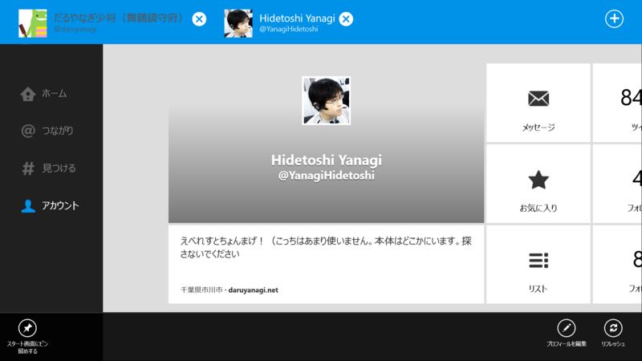

Twitter 1.1 for Windows 8
公開日：

The latest Twitter for Windows 8 now supports multiple accounts, lists + more. Get the update: URL
2013-08-02 02:56:54 via web
マルチアカウント━━━━(ﾟ∀ﾟ)━━━━!!
リスト━━━━(ﾟ∀ﾟ)━━━━!!
ピン留め━━━━(ﾟ∀ﾟ)━━━━!!
個人的には割りとどうでもいいアップデートだったけど*1、ちゃんと開発が進んでるのがわかって安心した。
そのほかにも、新着タイムラインの左にインジケーターがつくようになったり*2。あと、未受信のメンション（＠つながり）が大量にある場合に、何度もリロードしないと最新のメンションが読めない問題も治った。こういう細かい部分の改善はありがたいな……。
ただし、リロードした際に最新のメンションがとれるのはいいのだけど、抜け落ちた分をロードする手段がない*3。これはこれで不便なので、さらなるアップデートに期待。